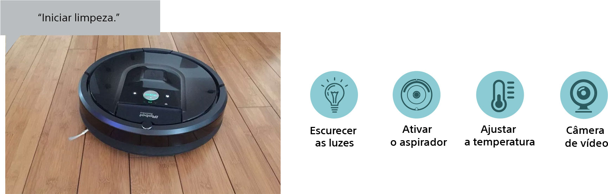

Quatro vezes mais detalhe para a imagem
mais realista de sempre
Com 7680x4320 pixels, a tecnologia 8K oferece uma resolução 4 vezes superior a 4K para uma experiência de visualização incrivelmente envolvente. As imagens preenchem o seu campo de visão com uma profundidade e textura extraordinárias. Aproxime-se e aprecie detalhes que nunca conseguiu ver antes.
1080p
4K
8K

Entretenimento sem fim1
Descubra jogos, fotos, músicas, conteúdos da internet e aplicações. Com uma Android TVtm da Sony, você está pronto para mergulhar em um mundo novo de entretenimento.
A plataforma AndroidTV possui mais de 800 aplicativos disponíveis.
Conheça abaixo alguns deles:
Como o diretor gostaria
Este modo foi especialmente desenvolvido para desfrutar os originais da Netflix e reproduzir a mesma qualidade de imagem do estúdio em nossa TV. Com a Calibração da Netflix, a intenção do criador é preservada fielmente.
O inteligente agora ainda mais inteligente
Encontre seu conteúdo favorito mais rápido do que nunca ou controle sua automação residencial usando o poder da sua voz.
Pesquise conteúdos
Acesse os serviços do Google
Controle seus dispositivos IoT³
Diga adeus ao controle remoto
Com microfone integrado, você pode interagir com sua TV sem a necessidade do controle remoto. Uma nova experiência ao assistir TV.
Transmita para uma tela maior e melhor
O Chromecast integrado permite transmitir seus vídeos, jogos e aplicativos favoritos de seu dispositivo móvel para a tela da TV com qualidade total.
Som da tela
Nosso sistema Acoustic Multi-Audio™ adiciona 2 alto-falantes bass reflex na parte traseira da TV aos já existentes, fazendo com que o som realmente saia do centro da tela. Com imagem e som precisamente sincronizados, sua experiência se torna muito mais imersiva.
Toda a emoção do cinema4
Com suporte aos formatos Dolby Atmos e Dolby Vision, assista os seus filmes favoritos de uma forma completamente nova, com mais drama e realismo em uma TV concebida para proporcionar uma autêntica experiência de cinema em casa.
A conquista da realidade
Nossa paixão é projetar TVs que comunicam fielmente o que os criadores imaginaram. A MASTER Series atende aos rigorosos critérios dos engenheiros de cinema e transformam imagens em realidade. Pela primeira vez, os criadores podem explorar sua imaginação e ver suas ideias reproduzidas em casa. Uma nova maneira de fabricar TVs, que só a Sony pode oferecer.
Luz nos locais em que é preciso
O Backlight Master Drive tem design único que reúne as luzes LED em um só lugar, reduzindo assim a difusão e a fuga de luz que existem em outros televisores Full Array LED. Isso garante que cada LED emita um feixe reto para produzir uma imagem nítida, revelando, assim, luzes brilhantes e cores pretas escuras.
Backlight
Master Drive
Design convencional
Calibrated beam LED design
Brilho inigualável em 8K
Devido aos pequenos pontos, é necessário haver boa engenharia para gerar brilho em um painel 8K. Ao equilibrar com precisão a saída de luz em toda a tela, através do escurecimento e iluminação independentes dos LEDs, a tecnologia 8K X-tended Dynamic Range™ PRO tem uma gama de brilho muito superior a de TVs convencionais com retroiluminação LED.
Imagens mais realistas de verdade
Veja como nossas tecnologias de qualidade de imagem mais recentes se unem para apresentar um entretenimento ultrarrealista em 4K HDR
Converte seu conteúdo para
8K e ressalta os detalhes

Tonalidades de cores vivas em qualquer ângulo de visualização
Precisão até nas cenas mais rápidas para imagens nítidas e brilhantes
Recomendada para Playstation
As TVs 4K HDR da Sony são excelentes parceiras para os consoles PlayStation®4 e PlayStation®4 Pro4. Mergulhe em uma experiência de jogos responsiva e divertida com cores intensamente vivas.
Realidade avançada
Por trás de cada tela de TV Sony há inúmeras tecnologias exclusivas de processamento de sinal e de controle de painel funcionando para criar uma imagem de tirar o fôlego.
Funciona
com a Alexa
Conecte seus dispositivos com a Alexa para controlar uma TV da Sony sem usar as mãos. Com a Alexa, você liga sua TV, muda de canal, controla o volume e muito mais.
Testada e aprovada por quem entende:
Controle remoto inteligente
Controle todos os aparelhos conectados ao HDMI com um único controle remoto.
Conexão sem fio
A tecnologia A2DP permite que você conecte um fone ou caixa de som Bluetooth com sua TV para uma experiência ainda mais completa.
Projetado no Japão
Com a cultura japonesa em seu DNA, nossos designers buscam incessantemente a perfeição em todos os detalhes. Cada produto busca atender aos consumidores mais exigentes.
47 anos
de Sony no Brasil
A busca pela perfeição nos fez construir uma história de sucesso. Organização, inovação, dedicação e muito trabalho foram fundamentais para que atendêssemos os desejos dos consumidores e oferecêssemos os melhores produtos do mercado. A qualidade está em nosso DNA e isso é reconhecido a cada prêmio que recebemos.
Prêmios que reconhecem a qualidade da marca Sony.